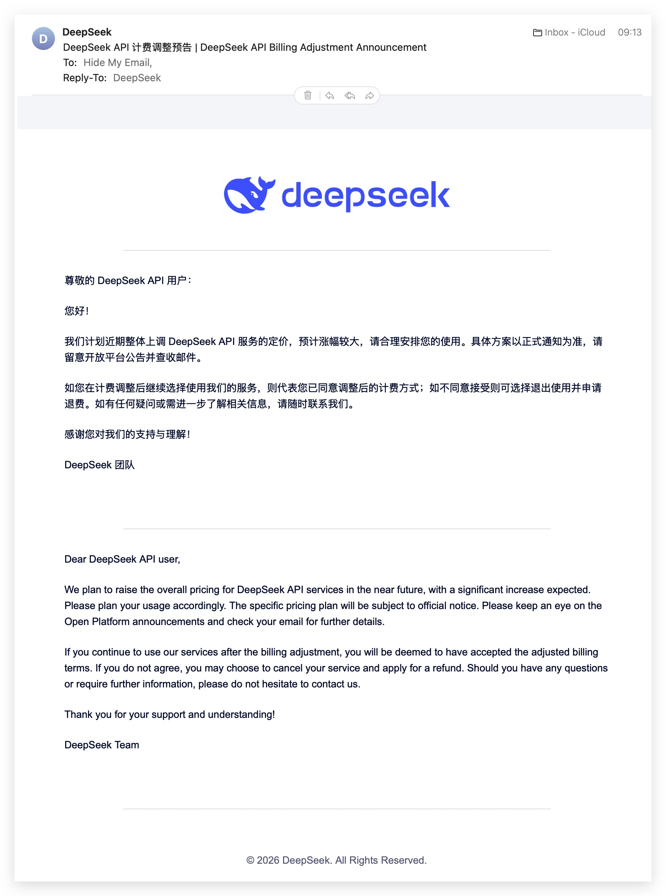

News
What is changing in the DeepSeek API, and what it does to the
cost of a call. Curated from official announcements and checked against the
live API where that is possible; the in-terminal feed is
ds docs changelog.
2026-08-06 · a broad price rise is comingdate tba
DeepSeek posted a notice in the platform console: all API services will be repriced “in the near term”, and the increase is expected to be substantial. Developers are advised to plan call volume and keep top-ups sized to what they will actually use. The final schedule and the new numbers are “subject to the official announcement” — and as of this page's build there is none.
The notice appears in the console rather than on the docs site, so it is easy to miss from code. It was widely reported on 2026-08-06 Beijing time.
The same notice went out by email to API account holders the same day, bilingual and unambiguous about the direction. The email adds one thing the console banner does not: continuing to use the service after the adjustment counts as accepting it, and the offered alternative is cancelling and applying for a refund. Received and archived here as the primary source:
{kind=link}

What it changes here: nothing, yet. The
cost page and ds models price from
the published card of 2026-08-02 until DeepSeek publishes a new one. The
ledger stores exact token counts rather
than prices, deliberately — when the card changes, every historical
call can be repriced under it.
announced 2026-06-29 · 2× during peak hoursdate tba
The pricing page has carried this since late June: the API will move to peak/off-peak pricing, with every billing item — input, cached input, output — costing 2× the regular price during peak hours. Off-peak, the current card stands.
| Window | Beijing (UTC+8) | UTC | Multiplier |
|---|---|---|---|
| peak | 09:00–12:00 | 01:00–04:00 | 2× |
| peak | 14:00–18:00 | 06:00–10:00 | 2× |
| off-peak | everything else | everything else | 1× |
The effective date is still “subject to the official announcement”. This CLI deliberately does not apply the multiplier to its estimates before that date exists — doubling every figure on a guess would be inventing data. The day it is real, the ledger's stored token counts make the switch a repricing, not a migration.
Two practical notes. First, the context cache discount is 50×; the peak multiplier is 2×. Prompt structure will still dominate your bill. Second, if batch work can move, move it — the off-peak window covers the whole European and American working day.
2026-07-31 · V4-Flash official release
The official DeepSeek-V4-Flash API entered public beta: same model name, same calling convention, re-post-trained weights with substantially stronger agent behaviour — DeepSeek's published numbers have it ahead of V4-Pro-Preview on Terminal Bench, DeepSWE and the rest of the agent suite. It natively speaks the Responses format and is explicitly adapted for Codex. The official V4-Pro release “will follow soon”.
2026-04-24 · V4 arrives, the old names leave
deepseek-v4-pro and deepseek-v4-flash became the
API's two models, served through both the OpenAI and Anthropic interfaces.
The legacy names deepseek-chat and deepseek-reasoner
were aliased to flash for a grace period and retired on
2026-07-24 — anything still sending them gets an
error, not a quiet remap.
Watching this without watching this page
This page is curated, not generated, so it carries what matters and skips what does not. The complete feed:
ds docs changelog # DeepSeek's own change log, in the terminal, offline
ds docs sync # refresh the snapshot the binary carries
ds models # the rate card the estimates use, next to the live model listUpstream: the official change log and pricing page, and status.deepseek.com for incidents.